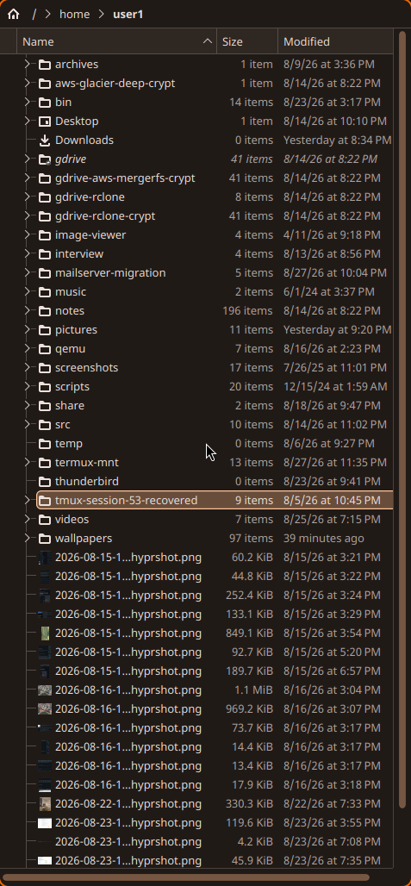
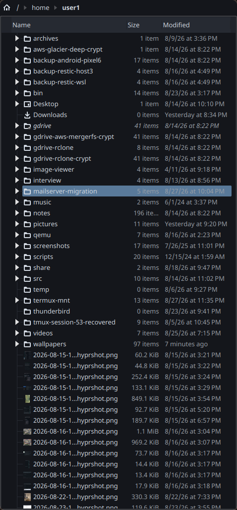

Theming pipeline
Wallpaper changes drive a Material You (HCT/tonal-palette) recolor
across every themeable app on the system, via
~/.config/hypr/scripts/gen-theme.py.
Trigger chain
set-wallpaper.sh <image> <- sole sanctioned way to change the wallpaper
│ copies image to the fixed path Background.qml displays
▼
~/.local/state/quickshell/wallpaper.png changes on disk
│
wallpaper-watch.sh (polls mtime; autostarted in hyprland.lua)
│ inotify-tools isn't installed here and installing it needs an
│ interactive sudo password this autostart script can't provide,
│ hence polling instead of inotifywait
▼
gen-theme.py --image <path> <- extracts the palette, writes every target belowwallpaper-rotate.sh (autostarted; moved 2026-08-29 from
a 15-min "for now" testing cadence to a considered 6h one) picks a
random image from ~/wallpapers every 6 hours and hands it
to set-wallpaper.sh, which is what actually triggers the
chain above — nothing extra is needed for colors to follow along.
wallpaper-cycle.sh steps forward/back through
~/wallpapers (sorted, wrapping) based on wherever
set-wallpaper.sh last recorded as the source.
~/wallpapers, not ~/pictures, is the rotation
pool.
It's a plain hl.exec_cmd-launched
while true; sleep loop, not a systemd unit — so a crash of
the script itself won't be restarted until the next Hyprland session
start (login, or a full compositor restart; hyprctl reload
does not re-fire hyprland.start). Deliberately
left this way 2026-08-29: set-wallpaper.sh calls
qs ipc call background reload, which only works talking to
the live quickshell instance in the current graphical session, and none
of this config's other autostart daemons (sysmond,
notifyd, wallpaper-watch.sh, the
wl-paste --watch line) are systemd units either — there's
no environment-import plumbing
(systemctl --user import-environment ...) set up anywhere
in hyprland.lua for a --user unit to inherit
WAYLAND_DISPLAY/the quickshell IPC socket. Converting just
this one script would be the odd one out for a low-value gain, since a
stalled rotator only freezes rotation — it doesn't affect
wallpaper-watch.sh's re-theming. Revisit if this
"minidaemon" is ever actually observed crashing — at that point
the right fix is probably systemd-ifying all of the session daemons
together (a hyprland-session.target + explicit environment
import in the hyprland.start hook), not just this one in
isolation.
gen-theme.py can also run seedless (default), deriving
the scheme from appearance.lua's existing cyan/green accent
gradient rather than an image — used for the quickshell bar's fallback
theme values.
What gen-theme.py
writes
Every write below is atomic (temp file + rename).
| Target | Consumed by |
|---|---|
~/.local/state/quickshell/scheme.json |
quickshell bar (Theme.qml, live FileView).
Includes seriesPalette (8 hues, per-core/iface lines) and
intensityRamp (5 calm→hot stops) — see quickshell-bar.md. Also read directly by
the GTK Rust tools: winswitch +
clipboard-picker pull primary for their 1px
accent window frame (load_accent_hex) and DSL
command-validity colouring — GTK's own @accent_color isn't
visible to a per-app CssProvider, so they interpolate the
hex themselves |
~/.config/gtk-{3,4}.0/colors.css |
libadwaita @define-color block; gtk.css is
a static @import "colors.css" shim. GTK3 live-reloads via
colorreload-gtk-module (GFileMonitor on mtime — no restart,
no flash). GTK4/libadwaita has no live-reload equivalent. |
~/.local/share/color-schemes/MaterialYou.colors +
kdeglobals
[Colors:*]/[WM]/[ColorEffects:*] |
Breeze widget style reads the scheme. gen-theme.py
writes the complete key set straight into
kdeglobals (see Qt widget style) and
fires the KGlobalSettings notifyChange D-Bus
signal — plasma-apply-colorscheme short-circuits once
MaterialYou is current and won't re-copy changed
colours |
| Hyprland border colors | via hyprctl eval (Lua binding — keyword is
refused under the non-legacy parser). Not written to
appearance.lua |
~/.config/alacritty/colors.toml |
[colors.primary/normal/bright], written whole;
alacritty.toml imports it
([general] import = [...]), live_config_reload
re-reads imports too |
~/.config/rofi/materialyou.rasi |
auto-@imported from config.rasi |
~/.config/tmux/theme.conf |
sourced from .tmux.conf; tmux source-file
is live |
~/.config/nsxiv/xresources |
Nsxiv.* X resources, xrdb -merged into
XWayland (nsxiv is X11-only); also merged once at Hyprland login since
wallpaper-watch may not have fired yet that session |
What's not tracked in git (2026-08-29)
Every pure recolor-output file above is listed in
.git/info/exclude (not .gitignore — this is a
public dotfiles repo, see home_git_repo_public_remote_secrets):
gtk-{3,4}.0/colors.css, alacritty/colors.toml,
rofi/materialyou.rasi, tmux/theme.conf,
nsxiv/xresources,
color-schemes/MaterialYou.colors, kdeglobals.
These churned ~8 tracked files on every 15-minute wallpaper rotation
before being excluded. Still tracked: the importers/shims that reference
them (gtk.css's @import,
config.rasi's @import,
.tmux.conf's source-file -q,
alacritty.toml's [general] import) and
gen-theme.py itself. On a fresh checkout these regenerate
within ~2s of wallpaper.png existing.
Qt widget style: Breeze, not Kvantum
Qt/KDE apps (Dolphin, Gwenview, Okular, Ark, …) render with the
Breeze widget style so they follow the generated
MaterialYou scheme. This was Kvantum
(darknord-kvantum) until 2026-08-29 — dropped because
Kvantum themes hardcode their whole palette
([GeneralColors] in the .kvconfig + colours
baked into the theme SVG) and override the KDE colour scheme wholesale,
so plasma-apply-colorscheme had no visible effect on any Qt
app. Kvantum has no stylesheet-overlay mechanism, so it can't be
recoloured live either. gen-theme.py now pins
kdeglobals widgetStyle=Breeze each run.
The screenshot on the left is the intended post-migration
look for Dolphin: flat list (no zebra striping —
[Colors:View] BackgroundAlternate ==
BackgroundNormal, see below), a slightly lighter
breadcrumb/toolbar band for chrome-vs-content separation, warm
hover/selection tint, and the whole palette tracking the wallpaper.
| Breeze + MaterialYou (current, intended) | Kvantum / darknord (former) |
|---|---|
 |
 |
| flat list, subtle toolbar elevation, follows the wallpaper hue | flat near-black Nord #14161B, fixed cool palette, blue
folder icons, filled ▶ tree expanders (from the Kvantum SVG — Breeze
draws a thin chevron and has no knob for it) |
color_sections() in gen-theme.py sets
view_alt = view_bg so list views don't stripe (the Breeze
default read as too strong on warm wallpapers; darknord had it off
entirely). Chrome elevation (View → Window → Button) is still
interpolated background →
surfaceContainer.
gen-theme.py writes the complete Breeze
key set into kdeglobals [Colors:*] (every
section + all Foreground*/Decoration* keys,
plus [WM] and [ColorEffects:*]) — a partial
scheme fills its gaps from compiled-in Breeze defaults and renders as an
incoherent mix. It writes kdeglobals directly (not via
plasma-apply-colorscheme, which short-circuits when the
scheme name is unchanged) and fires the KGlobalSettings
notifyChange signal to refresh running apps.
The darknord-kvantum theme files are preserved in git
history at commit 02abf2c
(git show 02abf2c -- .config/Kvantum/). To restore:
reinstall kvantum + kvantum-qt5, check the
files out,
kwriteconfig6 --file kdeglobals --group KDE --key widgetStyle kvantum-dark,
and drop the widgetStyle pin in gen-theme.py's
patch_kdeglobals_inline().
Live-reload support per toolkit
| Toolkit | Live? | Notes |
|---|---|---|
| GTK3 | Yes | colorreload-gtk-module |
| Qt/KDE (Dolphin) | Yes | Breeze widget style + KGlobalSettings notifyChange
after a direct kdeglobals write — see Qt widget style |
| GTK4/libadwaita | No | needs restart or a gsettings theme-name bounce |
| GIMP 3 | Only if gimprc has (theme "System") |
set 2026-08-28; gimprc is not in this
repo |
| Inkscape | Yes | follows system GTK theme by default |
| Thunderbird | Partial | Gecko; only GTK-derived chrome bits follow, full theming needs
userChrome.css |
| Electron/Chromium/Signal | No | never |
See gtk_theme_white_root_cause memory for a real incident this
pipeline caused (dconf pointing at an uninstalled
adw-gtk3-dark → white GTK apps) and its fix.
Rejected: extra vibrancy on the focused window (2026-08-29)
Idea: make the currently-focused window's colours punchier / more contrasting than the wallpaper-derived base, on top of the Hyprland border accent. Abandoned — no clean way to do it:
- App colours are global config. GTK's
colors.cssand KDE'skdeglobalsare single files reloaded into every app at once; no toolkit exposes a per-window runtime colour override. The one exception is alacritty (alacritty msg config -w …) — a focus-tracking daemon prototype worked but was terminal-only and spawned a process per focus event, so it was dropped. - A compositor-side saturation shader on the active
window needs a Hyprland plugin that function-hooks the renderer
(
hypr-darkwindowis a working template). There is no stable plugin API — plugins compile against an exact Hyprland commit and the renderer internals change a few times a year, so it's periodic maintenance. Hyprland's only stable shader hook,decoration:screen_shader, is whole-screen with no per-window info. decoration:dim_inactiveis the only stable, config-level "focused window stands out" lever — and it works by dimming the others, not by boosting the focused one. Not currently enabled.